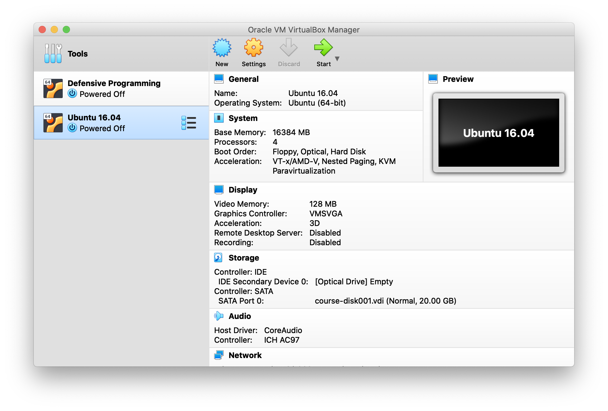

Instalación de la máquina virtual
Para la realización de los ejercicios he preparado una máquina virtual en Linux conteniendo todo el software ya instalado y los datos necesarios para llevarlos a cabo.
El archivo course.ova con la máquina virtual (6.4 GB) puede descargarse en este
link.
Para instalar la máquina virtual necesitaréis el software VirtualBox. Este software
es gratuito y está disponible para ordenadores en Windows, macOS y Linux. Puede
descargarse en la página principal de VirtualBox.
Una vez instalado VirtualBox habréis de crear la máquina virtual utilizando el
archivo course.ova y siguiendo los siguientes pasos:
- Abrir la aplicación
VirtualBox - Abrir el menú:
File > Import Appliance - Navegar hasta el directorio donde habéis descargado el archivo
course.ova, seleccionad el archivo y haced click enOpeny después enContinue. Entonces aparecerá una ventana similar a esta:
- En esta ventana podéis cambiar algunos valores como el nombre de la máquina virtual,
el número de CPUs, y la RAM. Por el momento se pueden dejar con sus valores por
defecto y se pueden cambiar más adelante. Hacer click en
Importpara generar la máquina virtual. Esto puede tardar unos minutos dependiendo del ordenador. - Una vez creada la máquina virtual aparece la ventana para administrar máquinas virtuales:

Si no habéis modificado el nombre, la nueva máquina virtual aparecerá como
Ubuntu 16.04. Haciendo click en el botónSettingspueden modificarse los valores de CPUs, RAM, etc de la máquina virtual. En cuanto a CPUs, con 1 es suficiente. En cuanto a la RAM, un valor entre 1 GB y la mitad de la RAM del ordenador es apropiado. Si vuestro ordenador tiene poca RAM (4 GB o menos), intentad no correr ninguna otra aplicación mientras utilizáis la máquina virtual. - Una vez hayáis modificado los ajustes de la máquina virtual, podéis arrancarla haciendo click
el
Start(flecha verde). Si la máquina virtual ha arrancado correctamente, podéis hacer click en el icono de la aplicaciónTerminaly ejecutar el comandols -l. Entonces vuestra pantalla debería ser similar a esta:
- Una vez inicada la máquina virtual, es conveniente instalar las
Guest Additions. Ir al menúDevices > Insert Guest Additions CD Image.... Esto montará un CD virtual que ejecutará automaticamente la instalación de lasGuest Additions. Para la instalación pedirá el password de administrador de la máquina virtual, que es seismo. Una vez se hayan instalado, expulsar el CD y reiniciar la máquina virtual. La instalación solo ha de realizarse una vez. - Si la máquina virtual no ha arrancado correctamente o reacciona muy lentamente, mirad la sección Posibles problemas al final de esta página.
La máquina virtual que habéis instalado contiene un entorno de trabajo completo para aplicaciones de Sismología en general y de Tomografía de Ondas Superficiales en particular. Tiene instaladas las siguientes aplicaciones:
SAC(Seismic Analysis Code): herramienta interactiva para el análisis de sismogramasSEISAN: paquete para el procesado de terremotos y redes sísmicasCPS(Computer Programs in Seismology): colección de programas desarrollados por Bob Herrmann (University of Saint Louis) para múltiples aplicaciones en Sismología (procesado de ondas superficiales, generación de sismogramas sintéticos, determinación de mecanismos focales, etc).GMT5(Generic Mapping Tools): programas para generar mapas, y gráficos para visualización de datos.- Programas llevar a cabo el proceso completo de tomografía con ondas superficiales.
Cuando hayáis confirmado que la máquina virtual funciona correctamente, entonces podréis
borrar el archivo course.ova para ahorrar espacion en disco.
Posibles problemas:
A pesar de que VirtualBox es posiblemente el programa más extendido para crear máquinas
virtuales con distintos sistemas operativos, es posible que os encontréis con algunos
problemas al correr la máquina virtual. Los problemas más comunes son:
Utilizando Windows
Al intentar arrancar la máquina virtual es posible que aparezca un mensaje de error similar a este:
VT-x/AMD-V hardware acceleration is not available on your system
Si vuestra CPU es muy antigua puede que no soporte VT-x/AMD-V y entonces no podréis utilizar
la máquina virtual. Sin embargo lo más habitual es que VT-x/AMD-V no esté activado, y/o que
vuestro ordenador esté utilizando Hyper-V que es la tecnología de virtualización de Microsoft
y que suele estar activada por defecto.
Si os encontráis con este error, en este
link
podéis encontrar información detallada sobre como activar VT-x/AMD-V.
Si al arrancar la máqina virtual no os da ningún error pero funciona muy lenta, puede
deberse al problema descrito en este
link
y que también tiene que ver con Hyper-V.
Utilizando macOS
Si tenéis in Mac reciente con pantalla retina, también es posible que VirtualBox funcione muy lentamente, incluso en ordenadores con varios núcleos y mucha memoria.
La solución es abrir VirtualBox en modo de baja resolución, siguiendo los siguientes pasos descritos en este post de Reddit:
- Navigate to Apps folder. Choose VirtualBox.app
- Right click on VirtualBox.app, Show Package Contents.
- Contents -> Resources -> VirtualBoxVM.app (right click -> Get info)
- Check the "Open in Low Resolution" checkbox.
- Run the Virtual Machine in 100% scale mode and with the "VBoxSVGA" graphics controller selected